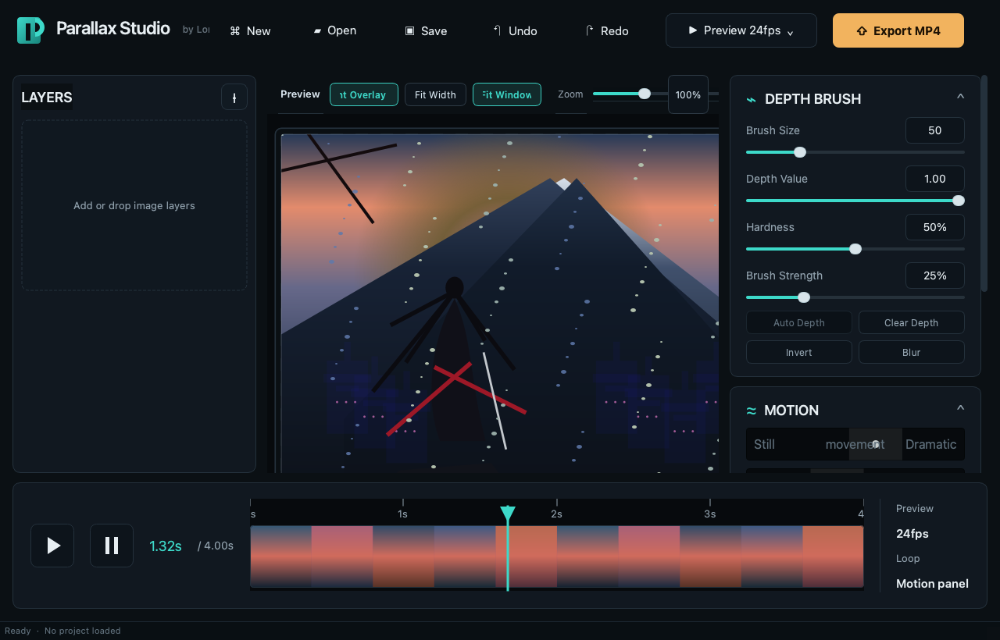

Parallax Studio
A local macOS tool for importing layered art, painting depth, and turning still images into clean looping parallax motion.
- Target
- macOS Apple Silicon
- Workflow
- Import, paint, preview, export
- Project file
.parlx

What it does
One focused workflow instead of a giant editing suite.
Layer stack
Import background, character, and foreground layers, then reorder, hide, duplicate, and scale them.
Depth paint
Brush depth directly onto the selected layer with readable overlays and undo/redo for edits and transforms.
Motion preview
See live parallax movement while tuning intensity, focus, and loop behavior before export.
Built for
Artists who want motion from still art without a 3D pipeline.
Visual novel scenes
Layered character art and backgrounds stay editable while you tune depth for subtle motion.
Short loops
Export GIF or MP4 loops for previews, social posts, trailers, or in-game presentation.
Local-first workflow
No cloud dependency. The app stays on your Mac and references source image files directly.
Stack
Python and Qt, tuned for Apple Silicon.
UI
PySide6
Image processing
NumPy and OpenCV
Export
imageio, ffmpeg, and Pillow